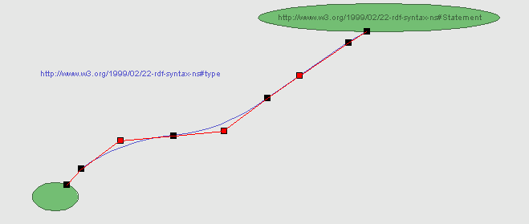
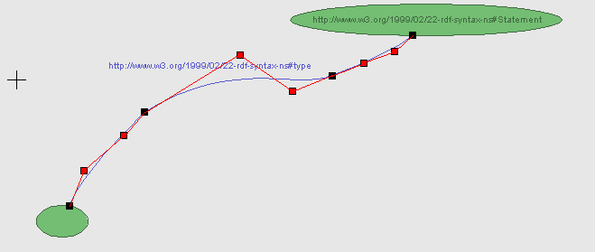

Depending on the origin of the statement associated with a spline, the latter might be composed of different types of curves. Splines associated with statements coming from an imported RDF model are exclusively made of cubic curves (unless you add new points to them, in which case the spline will also contain quadratic curves). Splines created from scratch are made exclusively of quadratic curves, except for the first and last ones which are straight segments.
A quadratic curve has two endpoints (black boxes) and one control point (red boxes), which determines the shape of the curve by controlling both of the endpoint tangent vectors. The example below shows a spline made of a straight segment followed by three quadratic curves and ending with an additional straight segment.
A quadratic curve has two endpoints (black boxes) and two control points (red boxes), which determine the shape of the curve by each controlling one of the endpoint tangent vectors. The example below shows a spline made of three cubic curves.
Back to the User Manual's main page
Emmanuel Pietriga |